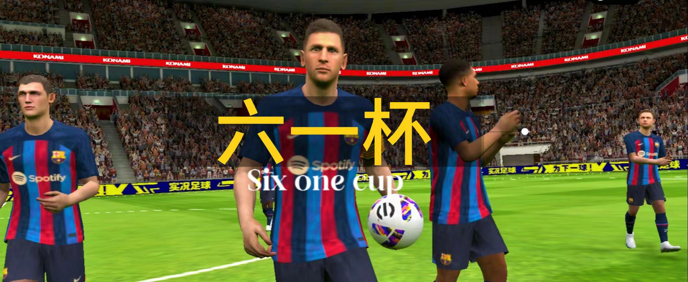

六一杯规则
1.如有发现消极比赛，将扣除20分。（需以视频为证，由足协审核）
2.如双方均有网卡问题，则以六一点球决胜负。如只有一方有网卡问题，并且尝试重练三次均未成功，则自动判负（0-3）。如七十分钟之后出现网卡问题，则以即时比分为最终结果。
3.当主教练在直播间有言语不当行为，将被罚向看台，只能以“教练模式”参加接下来的比赛。
4.当球队获得两张黄牌时，主教练将被罚30分钟（只能以“教练模式”继续比赛）。
5.每十届将会有一次奖金发放，届时，冠军将获得6元1毛，亚军将获得六毛1分。
6.比赛当中，球员的状态应设置为“随机”，严禁主教练恶意更改状态。如有发现，将直接以0:3判负（需截图为证，由足协审查）